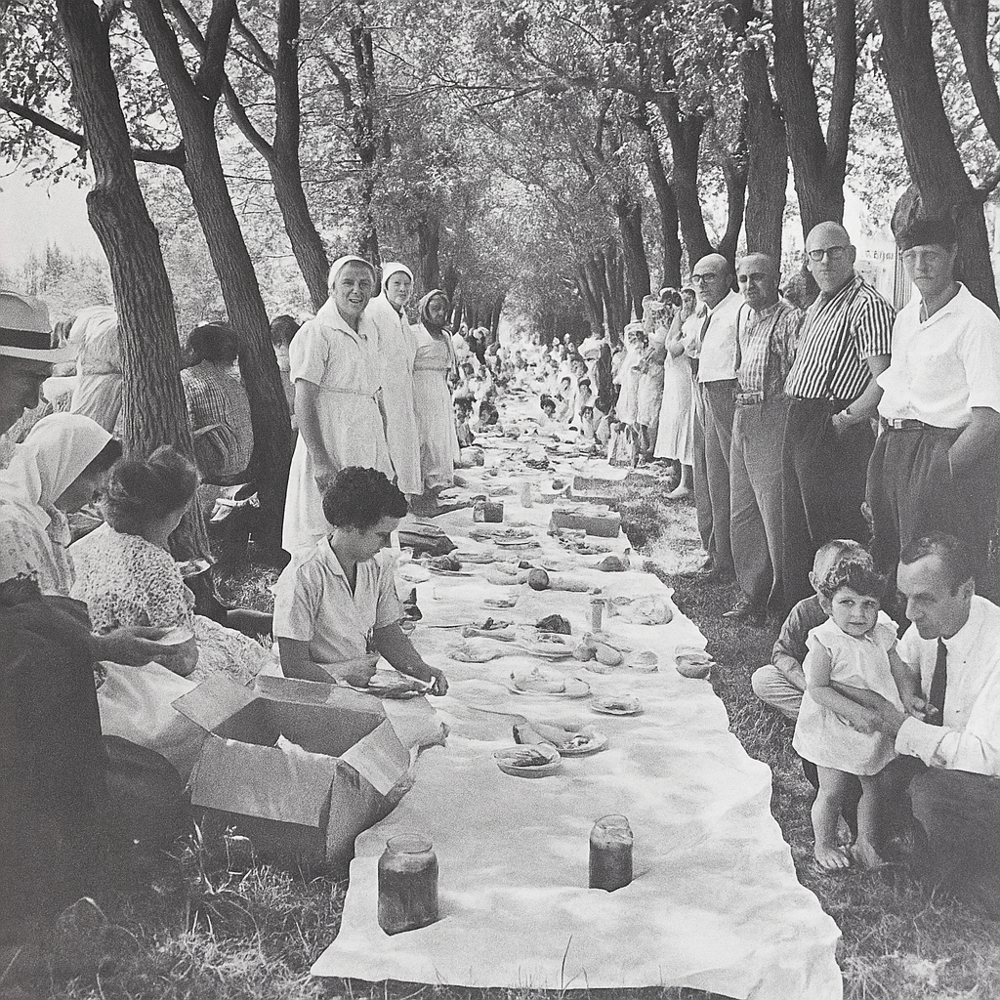

Volunteer note: posts display oldest-first — sorry, we couldn't figure out how to reverse the order.
Welcome to the Ilyaview Community Message Board! Leave a message using the form below. Happy New Year everyone!
temp is -15°C this morning, arena ice is good. teen skate friday helmets please
ATTN: hall keys were found on the stage and have been stored for safe keeping at the post office. The Hall floors are freshly waxed. please use soft sole shoes.
annual Ilya's Day picnic held in the maple rows along First Avenue South, after the singing and psalms and other religious observances in the Prayer Home in Ilyaview, SK. At least 125 people (and likely more!) can be seen at this event, photographed on April 28, 1952 by Stephen Peacock.

lost my blue mitt at the church steps!! if anyone finds it please leave at post office!! thanks everyone!! :) :)
Found. Elena's mitt. Frozen to steps.
david you're absolutely the best!! thank you so so much!! :D :D
Barometric pressure: 30.12 inHg. Temperature gradient suggests chinook pattern developing.
book exchange restocked!! take one leave one!! kids books especially welcome!! so exciting!! :) :)
Approach cleared. Equipment ready. Call if stuck.
bake sale sunday after service. also looking for elena petrenkos perogy recipe!
marie i would absolutely love to share!! its my mum's recipe!! so honored you asked!! :) :) :)
welcome henderson family!! father dimitri says please bring the kids to sunday school!! we're so thrilled to have you!! :) :) :)
Thank you Elena! Happy to be here.
Hope nobody minds if I use this like a journal sometimes. Still learning computer, so please bear with this - fumbling through the modern world.
The geese returned over the slough this morning like clockwork, honking their ancient songs of homecoming. Spring breathes across our land again, though somehow the earth feels expectant, as if holding its breath for something greater.
oh peter that's absolutely beautiful!! thank you so much for sharing that with all of us!! :) :)
Kids Easter egg hunt Saturday 2pm behind hall! All ages welcome.
Blessed Pascha! Christ is Risen! Thank you all for the beautiful paska and colored eggs. Hall cleanup tomorrow 10am.
Thunder bearing 270°, 4:03pm. Humidity: 78%. Storm approach velocity: 15 km/h.
hockeys over but can we just keep the rink flooded? more fun than seeding
You're still helping with seeding.
got accepted to pre-engineering at u of s! still deciding. I might take a year off and help with harvest. still gonna be here for seeding.
congratulations mike!! your parents must be so proud :)
census people came by yesterday 73 residents they counted down from 78 in 2006
End-of-school picnic June 15th! Games, prizes, hot dogs. Volunteers needed!
Rain finally came. Grid roads are a total mess, but the fields needed every drop. Marie's making babka for the bake sale.
cemetery road is soft please park on gravel and walk in genealogy meeting postponed until further notice
grad was amazing!! Thx everybody!
so proud oxy! keep in touch!
Solstice sunset painted the whole town copper and gold tonight. God's artistry on full display tonight.
canada day picnic! bike parade @ 10am! :D
Heat lightning. North quarter. Duration: midnight to 0147hrs. Found sand. Melted. Collecting samples.
That's very interesting, David! Thanks for sharing.
Reading program wrap-up Thursday! Kids read over 200 books this summer!
St. Ilya's Day service 10am, potluck follows. Cemetery prayers after if weather permits.
Combines rolling slow but yields are fair to middling. Watch for smoke to the south - looks like grass fires.
aurora last night was something green curtains horizon to horizon church bell made little humming sound
same story squeeze communities till we disappear
ATTN: School board meeting scheduled Tuesday.
The freeze draws near like an old friend returning for winter's visit. Soon we'll drain the hall's water lines and surrender the pipes to winter's embrace, as our fathers did and their fathers before them.
st nicholas choir practice tuesday! hot chocolate after :)
frost made little wheel patterns on weather shack windows -18°C wind probably swirled around corners
St. Nicholas Day has blessed our community once again. Home blessings begin next month for those who wish.
home for xmas break!! anyone going city after new years?? need ride back :o visiting now if anyone wants hang! <3
Christ is born! Glorify Him! Our church was full and warm tonight, and the children's voices truly warmed every heart.
visiting campus next month. nervous about leaving :O
Heifers calved early this year. Everyone watch for black ice past the 2-mile corner - pretty treacherous out there.
Job interview in Stooooon!! ZOMG! Scared.. BUT Excited. Anyone wanna come up with for a day trip on the 9th? Shop maybe? :)
spring melt pooling behind hall THERE ARE SANDBAGS IN THE SHED sorry caps lock oops
Science fair Friday! This year, we are doing presentations around prairie weather patterns.
happy to help katie with REAL weather data. That is SO fun that you're doing a weather theme this year! Happy to have you here.
campus visit was great! leaning toward going fall
got job!! starting june 1st. going to miss everyone
so proud oxy!! the city is lucky to get you
Strange thunder last night. No lightning. Tools humming after. Shut breaker, still hummed.
unusual david. worth noting, thanks
Sky stacked up in layers like lumber last night. Dead calm, but the wheat was laying east. Noted the time - exactly 3:33am.
St. Ilya's Day was another peaceful and blessed affair. Continue to watch the skies with grateful hearts, always.
Community Art Competition winner announced! Congratulations to Katie Henderson; the piece will be displayed at the Community Hall through September.

We are now down to 51 students. The division is being hard-nosed and says we need 88. Maybe recruit neighboring families?
bureaucrats deciding our fate watching place die thirty years close school then post office then were ghosts
Elevator might close after harvest too. My grandfather hauled his first load there in 1923. Times change, I suppose.
NOTICE: If windows crack during storms, leave damage alone unless dangerous. Tape in cross patterns for safety
Unusual warm wind 11:50pm tonight lasted exactly 33 seconds then stopped temperature spike 8 degrees logged for records
Same warm breeze again tonight. Bell rope moved on its own, no one in church.
Circle north quarter faint under snow. 20 feet diameter. Dogs won't cross. Marked stakes.
who even cares im over it you people sitting around letting this town go to shit go to church more why dont you dumasss no one wants to learn to work they wanna go to the city for school then what you owe them all your money and your soul basically and leave without learning flat nothing
was better when i was growing up and i grew up without power my mom was born here by the midwife i saw that building become a hall then a community centre then a grocery store and now its a boarded up real estate office and now we got a different hall nice change thanks everyone give yourself a big pat on the back
[REMOVED BY MODERATOR - PENDING REVIEW]
we should make a facebook page. this site SUUUUCKS!
Saw a perfect ring around the moon last night. Old-timers say that means weather coming within 48 hours. Keep diesel topped up.
URGENT: Walter Henderson officially reported missing. Neither his employer nor family have heard from him. If anyone has information please contact committee immediately
I don't know if anyone heard but we haven't heard from walter in some time now :(. parent council bake sale raised $184 for library books marie kowalskis butter tarts were first to sell out!
snow squall and thunderstorm in the same hour yesterday!! never experienced anything quite like it power flickered twice during the thunder strange feeling in the air
Storm last week bent the pump house sheet metal straight up toward the sky. No wind damage around it, no fallen branches. Left it alone - looks right somehow.
barometric pressure dropping in precise steps all week 30.12, 30.09, 30.06, 30.03 very unusual pattern anticipating significant weather event tonight if traveling watch sky carefully
Found fence wire twisted like corkscrew on east line. Metal didn't break. Just spiraled. Keeping piece for collection.
Lightning glass by south slough. Perfect spiral, cold to touch. Anyone else finding pieces like this? Would like to compare.
Solstice clouds held dead still for ten minutes at sunset. No wind in the yard, but wheat leaning east like something was calling it.
recorded low-frequency hum over flats after last nights storm duration approximately 12 minutes frequency similar to sustained musical note but impossible to identify pitch
St. Ilya's Day service blessed our community despite the unusual weather patterns. We will continue to keep faithful watch and not be troubled by signs and wonders.
Elevator closure confirmed after harvest. Five generations of our families hauled grain there. Metal on the east storage bin bent skyward, reaching up to heaven.
Barometric pressure stepped down in 7 precise intervals again. Timed the sequence: identical to June measurements. Pattern suggests predictable phenomenon.
thanksgiving supper smaller this year but filled with gratitude brought grandma fedchuns traditional holubtsi recipe prepared a plate for the henderson family but no response when i knocked
henderson place is standing empty again neighbors said they moved to regina but nobody saw a moving truck strange to leave supper dishes still set on the table
Initial measurement of circle phenomenon in north quarter: 20 feet diameter. Will monitor monthly for changes. No animal tracks entering or exiting perimeter. Snow settles differently inside the circle.
church windows resonated during last nights frost formation clear sustained tone audible to children as well no one seemed frightened by the sound
Radius measured at 24 feet. Chalk perimeter markers holding position under snowdrift. Detected low-frequency hum at circle edge. Did not enter the formation.
christmas eve phenomenon candles by church door would not extinguish despite conditions outside star visibility exceptional throughout night christmas miracle?
Circle visible through snow cover under specific lighting conditions. Marked magnetic north orientation. Atmosphere around perimeter carries distinct scent of approaching rain.
new year greetings to our remaining families while we may be fewer in number our community bonds grow stronger
Circle radius: 21 feet by measuring tape. Grid chalk markers indicate NE↔SW directional flow pattern. Clock radio displayed 03:33 without manual setting. Phenomenon documented.
Christ is born! Glorify Him! Thank you to all who joined our celebrations. We'll be holding additional prayer meetings this winter as we seek to understand the signs we've been given. Do not be afraid of these wonders.
Seeking qualified teacher for K-12 classroom. Previous instructor no longer available. Contact school board members for application information.
Diameter: 25 feet. Frost formations resembling wheel patterns appeared on fence posts. No animal tracks detected. Wind conditions logged as completely calm.
Community meeting Thursday 7pm - discussion of alternative school options and bus route arrangements to neighboring districts. All families encouraged to attend.
Measurement: 28 feet. Chalk markers holding position. Maintained silent observation at 3:33am—farmyard fell completely quiet during this interval. Documented accordingly.
wind pattern NE→SW generated sustained musical tone through bell tower framework. Duration recorded: precisely 3 minutes 33 seconds. Double-checked timing using GPS-synchronized clock.
Community guidance: if you hear sustained musical tones, pause and listen carefully. Do not attempt repairs or adjustments. Allow natural phenomena to complete their expression.
Pascha sunrise through the damaged window glass created wheel-shaped light patterns across the church nave. Several parishioners were moved to tears at the beauty. Glory to God for all things.
Swallows haven't returned to their usual nesting sites under the barn eaves. Previous year's mud remains, anchor nails intact, but no birds have claimed the spots. Farmyard unusually quiet at breakfast time.
Primary circle: 38 feet by morning measurement. Chalk grid extended cleanly, four square sections to fence line. Three barometric pressure decreases at 3:33am.
got oxys job offer in the mail today. she wouldve done great in the city i think. hope shes enjoying herself!
church windows cracked in really beautiful pattern after the storm sun came through like a blessing this morning
Reminder: please don't straighten storm-bent metal structures. Father Dimitri says the patterns have significance and should be preserved as formed.
Solstice lightning event: electrical activity followed fence lines in perfect grid pattern. Never witnessed anything similar in all my years. Metal structures sang afterward like massive tuning forks. Rejoice.
Community guidance: leave outbuilding doors unlatched during storms; orient loose metal surfaces skyward. Do not fear the songs. "As surely as the Lord lives and as you live, I will not leave you."
Canada Day celebration subdued but meaningful with our remaining families. Digital barometer readings: 29.876 inHg at 06:00, dropping to 29.401 inHg by 18:00. Children played beneath remarkable storm cloud formations. Pressure dropping at rate of 0.034 inHg per hour. They show no fear and understand how special our sky is.
Barometric pressure decreased in three-step pattern this morning. Bell rope warm to touch. Those called early were blessed. May they save places for us.
Last night's storm was extraordinary beyond words. Lightning formed perfect crosses repeatedly across the sky. Something's building toward August, I can feel it in the air, in the way the metal sings after each storm.
the jessen family has been blessed!! their place went so peaceful and quiet!! they've gone ahead to prepare the way!! save spots for all of us dear friends!! :) :)
15 households present after service same as 1906 by the genealogy records pattern holds steady
Sunday prayer for those called early. Jealous hearts create haste; maintain faithful watch instead. Elijah did not abandon Elisha before the whirlwind came.
the children are drawing such beautiful wheel patterns on the floor where the sunlight lands!! resembles our church glass like a divine sign!! they're not frightened at all!! 13 households now!! :) :D
Do not envy those called early. Keep vigil, keep windows open to the song. "As surely as the Lord lives and as you live, I will not leave you." We wait together.
sarah and tom have been called!! house empty no forwarding!! so blessed for them!! :) :D
Building preparation: if you have loose siding, turn nails outward. Father says sky takes it better when it can lift cleanly.
Drove to hall and back at dusk. EMF detector showing anomalous spikes every 3.33 minutes. No insects on windshield. Porch light didn't draw a single moth. Feels wrong to be relieved. Wind speed: 0.0 km/h sustained. Digital humidity sensor: 73.2%. Dewpoint: 12.8°C.
Tonight we keep a vigil. Doors unlocked, hymn sheets by the bell. Say it with me: "As surely as the Lord lives and as you live, I will not leave you." None of us goes alone.
Couldn't find my own voice during vespers last night. Kept coming out in a dulled hum instead of words. Slept in my boots by the door, waiting.
checked the numbers twice!! 7 households by evening count!! :) :D
Final guidance: travel grids after dusk only if called; leave latches loose; do not separate households. "As surely as the Lord lives and as you live, I will not leave you." We go when called, together.
Packed small bag then unpacked again. Sat by door before dawn. Nothing. Quiet now. Don't like the quiet one bit. If everyone went ahead, good of them to hold us a place.